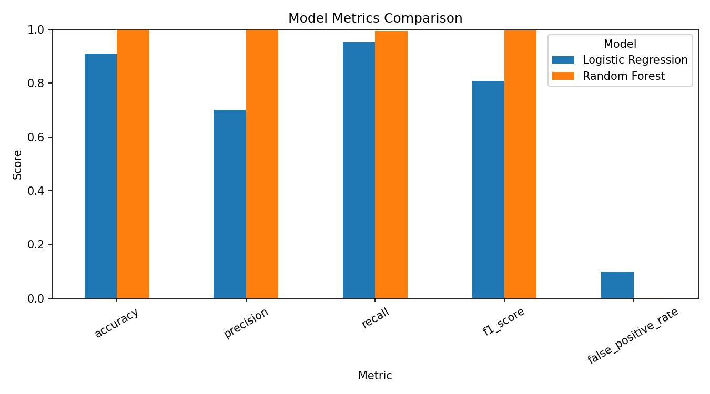
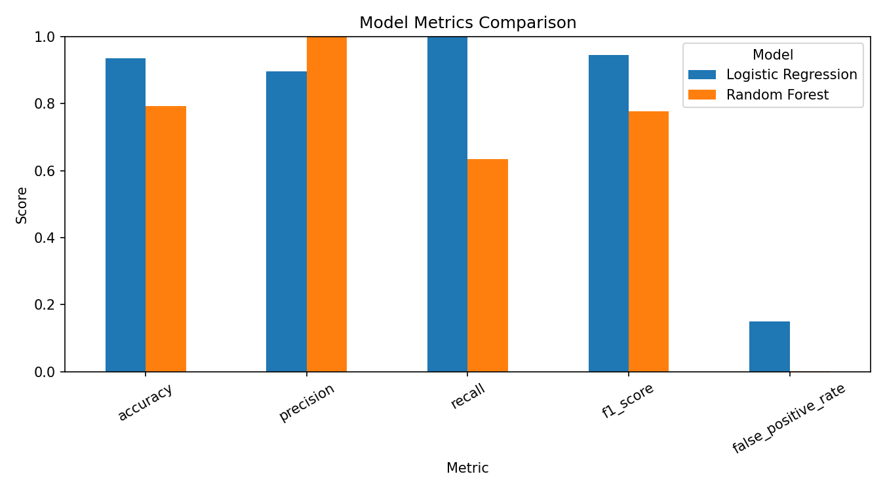
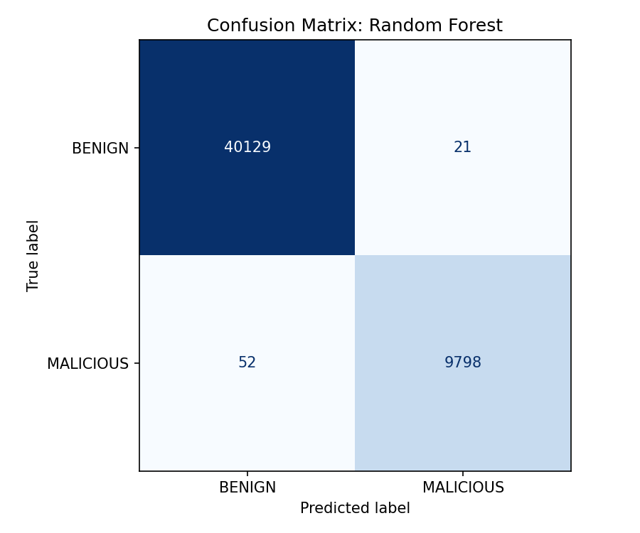
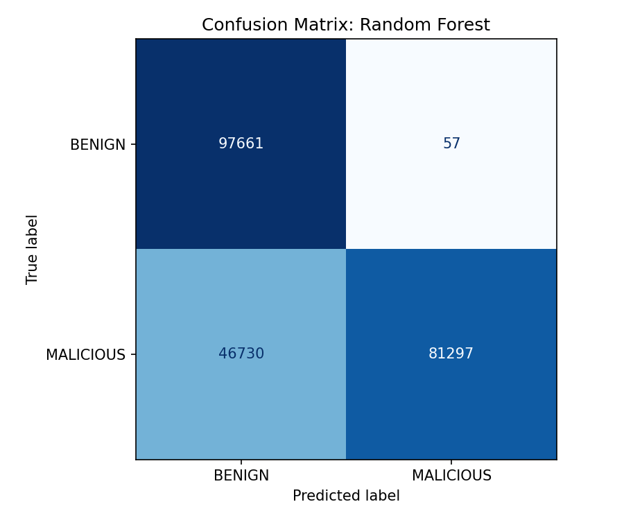
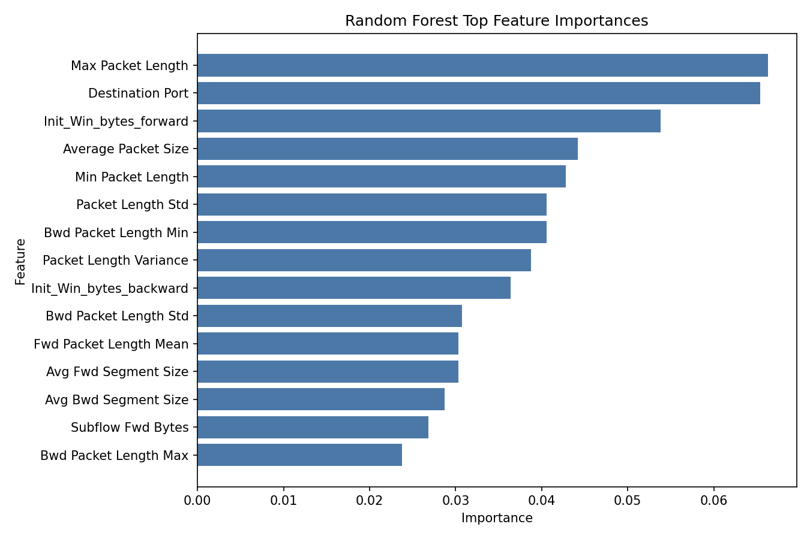

Logistic Regression baseline
Interpretable, tidy, and occasionally a little dramatic about benign traffic.
3,996false positives
471false negatives
CICIDS2017 binary intrusion detection
Logistic Regression brought a clipboard. Random Forest brought 100 trees. This page shows what happened when both tried to separate BENIGN traffic from MALICIOUS flows.
The random split is the polished demo. The held-out file validation is the stricter "will this behave on a source file it has never seen?" check.
Random Forest looks almost suspiciously good here: F1 0.9963 and only 21 false positives. The model is not retired to a beach yet, but it has earned one sensible nod.
Interpretable, tidy, and occasionally a little dramatic about benign traffic.
Excellent in the random split. More humble when Friday's DDoS file gets the microphone.
These are the committed figures generated by python -m src.train_models.
No screenshots of screenshots. The page points to the actual artifacts.




Feature importance is not causality. It is the model saying, "these columns were useful during my decision-making phase, please do not overquote me."
| Top feature | Importance |
|---|

The page is static and GitHub Pages friendly. These compact previews show the CSV results without throwing you into raw comma-land immediately.
| Model | Accuracy | Precision | Recall | F1 | FPR |
|---|---|---|---|---|---|
| Logistic Regression | 0.911 | 0.701 | 0.952 | 0.808 | 0.100 |
| Random Forest | 0.999 | 0.998 | 0.995 | 0.996 | 0.001 |
| Model | Accuracy | Precision | Recall | F1 | FPR |
|---|---|---|---|---|---|
| Logistic Regression | 0.935 | 0.897 | 0.999 | 0.946 | 0.150 |
| Random Forest | 0.793 | 0.999 | 0.635 | 0.777 | 0.001 |
| Feature | Importance | Small human translation |
|---|---|---|
| Max Packet Length | 6.63% | Big packets were apparently not subtle. |
| Destination Port | 6.54% | The destination mattered. Networking remains networking. |
| Init_Win_bytes_forward | 5.38% | TCP window behavior joined the evidence board. |
| Average Packet Size | 4.42% | Traffic shape helped separate the classes. |
| Min Packet Length | 4.28% | Even the small packets had something to say. |